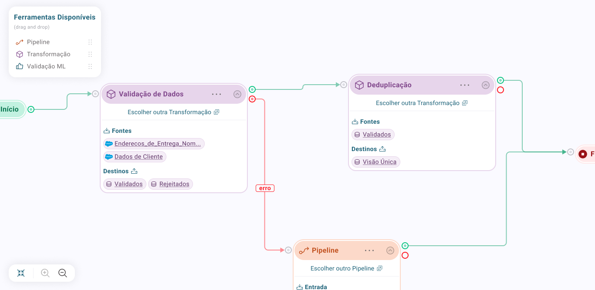

Meu trabalho começa por entender quem vai usar o produto.
Eu investigo como as pessoas usam software no dia a dia, onde encontram dificuldades e de que informações precisam para decidir. A partir disso, desenho ferramentas que ajudam profissionais a realizar tarefas com mais clareza e autonomia.

Datacare
Conhecimento em dados, mais acessível para quem trabalha com eles
Desenhei uma plataforma de qualidade de dados, reunindo diagnóstico, ferramentas de tratamento e pipelines para apoiar o trabalho dos analistas.
Até onde a IA pode ajudar a redesenhar um portfólio? a criatividade não elimina a possibilidade de alucinação; ela apenas torna a veracidade um critério que nem sempre é relevante para avaliar o resultado.